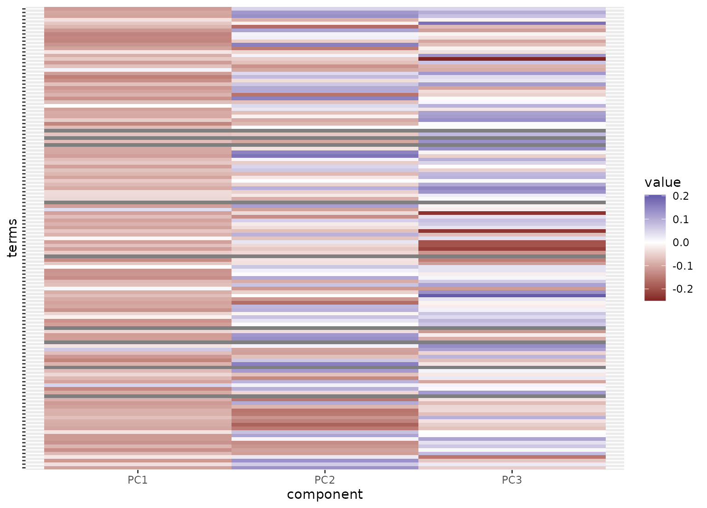

step_pca_sparse_bayes() creates a specification of a recipe step that will convert
numeric data into one or more principal components that can have some zero
coefficients.
Usage
step_pca_sparse_bayes(
recipe,
...,
role = "predictor",
trained = FALSE,
num_comp = 5,
prior_slab_dispersion = 1,
prior_mixture_threshold = 0.1,
options = list(),
res = NULL,
prefix = "PC",
keep_original_cols = FALSE,
skip = FALSE,
id = rand_id("pca_sparse_bayes")
)
# S3 method for step_pca_sparse_bayes
tidy(x, ...)Arguments
- recipe
A recipe object. The step will be added to the sequence of operations for this recipe.
- ...
One or more selector functions to choose which variables will be used to compute the components. See
selections()for more details. For thetidymethod, these are not currently used.- role
For model terms created by this step, what analysis role should they be assigned? By default, the function assumes that the new principal component columns created by the original variables will be used as predictors in a model.
- trained
A logical to indicate if the quantities for preprocessing have been estimated.
- num_comp
The number of PCA components to retain as new predictors. If
num_compis greater than the number of columns or the number of possible components, a smaller value will be used. A value of zero indicates that PCA will not be used on the data.- prior_slab_dispersion
This value is proportional to the dispersion (or scale) parameter for the slab portion of the prior. Smaller values result in an increase in zero coefficients.
- prior_mixture_threshold
The parameter that defines the trade-off between the spike and slab components of the prior. Increasing this parameter increases the number of zero coefficients.
- options
A list of options to the default method for
VBsparsePCA::VBsparsePCA().- res
The rotation matrix once this preprocessing step has been trained by
prep.recipe().- prefix
A character string that will be the prefix to the resulting new variables. See notes below.
- keep_original_cols
A logical to keep the original variables in the output. Defaults to
FALSE.- skip
A logical. Should the step be skipped when the recipe is baked by
recipes::bake.recipe()? While all operations are baked whenrecipes::prep.recipe()is run, some operations may not be able to be conducted on new data (e.g. processing the outcome variable(s)). Care should be taken when usingskip = TRUEas it may affect the computations for subsequent operations- id
A character string that is unique to this step to identify it.
- x
A
step_pca_sparse_bayesobject.
Value
An updated version of recipe with the new step added to the
sequence of existing steps (if any). For the tidy method, a tibble with
columns terms (the selectors or variables selected), value (the
loading), and component.
Details
The VBsparsePCA package is required for this step. If it is not installed,
the user will be prompted to do so when the step is defined.
A spike-and-slab prior is a mixture of two priors. One (the "spike") has all of its mass at zero and represents a variable that has no contribution to the PCA coefficients. The other prior is a broader distribution that reflects the coefficient distribution of variables that do affect the PCA analysis. This is the "slab". The narrower the slab, the more likely that a coefficient will be zero (or are regularized to be closer to zero). The mixture of these two priors is governed by a mixing parameter, which itself has a prior distribution and a hyper-parameter prior.
PCA coefficients and their resulting scores are unique only up to the sign. This step will attempt to make the sign of the components more consistent from run-to-run. However, the sparsity constraint may interfere with this goal.
The argument num_comp controls the number of components that
will be retained (per default the original variables that are used to derive
the components are removed from the data). The new components
will have names that begin with prefix and a sequence of
numbers. The variable names are padded with zeros. For example,
if num_comp < 10, their names will be PC1 - PC9.
If num_comp = 101, the names would be PC001 -
PC101.
References
Ning, B. (2021). Spike and slab Bayesian sparse principal component analysis. arXiv:2102.00305.
Examples
library(recipes)
library(ggplot2)
data(ad_data, package = "modeldata")
ad_rec <-
recipe(Class ~ ., data = ad_data) %>%
step_zv(all_predictors()) %>%
step_YeoJohnson(all_numeric_predictors()) %>%
step_normalize(all_numeric_predictors()) %>%
step_pca_sparse_bayes(all_numeric_predictors(),
prior_mixture_threshold = 0.95,
prior_slab_dispersion = 0.05,
num_comp = 3,
id = "sparse bayesian pca") %>%
prep()
tidy(ad_rec, id = "sparse bayesian pca") %>%
mutate(value = ifelse(value == 0, NA, value)) %>%
ggplot(aes(x = component, y = terms, fill = value)) +
geom_tile() +
scale_fill_gradient2() +
theme(axis.text.y = element_blank())
